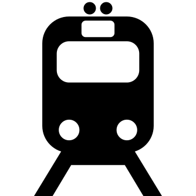

ЖД доставка
Этот способ подходит для доставки мало и среднегабаритных, ценных или хрупких грузов. Поезда следуют с высокой скоростью строго по расписанию,захватывая труднодоступные города для других видов транспорта.

Авиадоставка
Идеальный вариант для срочной доставки небольшого груза. За счет сотрудничества с крупнейшим авиаперевозчиками мы обеспечиваем перевозку точно в срок.
Автодоставка
Идеально подходит для малогаборитных грузов.В отличие от других видов доставок,при возникновении помех на пути следования машина может корректировать маршрут Доставка осуществляется из рук в руки.